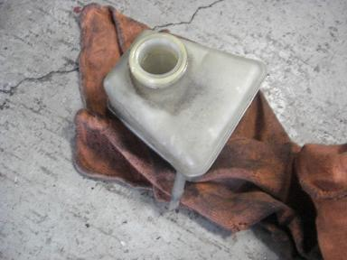 左ハンドルの場合、クラッチラインは、ブレーキオイルと共有になっています。 ブレーキオイルのリザーバータンクに使われていない突起があるので これの先を少し切り、この切り口とマスターシリンダーをホースで繋ぐ。 |
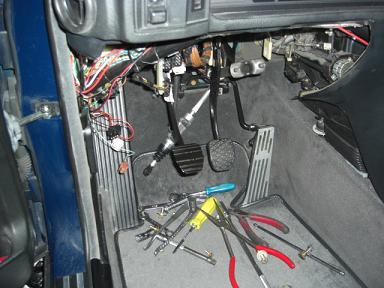 狭い空間で防水の為のゴムを付けたり ホースを通したりするので体力の消耗が激しい。。 ペダルの奥に垂れ下がっているのがマスターシリンダー だんだんと形になってきた＾＾ |
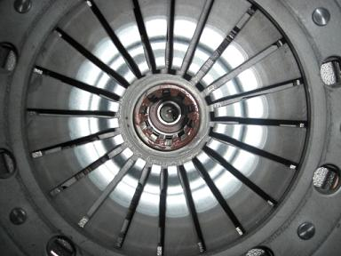 フライホイールにベアリングをはめてエンジン側へ固定し クラッチディスクのセンターを出しつつカバーを取り付けていく。 センター出しには専用の工具を使用していた。 真ん中に見えるのがパイロットベアリング |
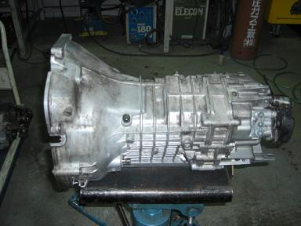 これが、今回取り付けるミッション E34M5のGETRAG 280/5 見た目はソコソコ綺麗 中の状態は不明。。 本当にちゃんと走れるのか。。 もし走れなかったら帰れないし。。 走れなかったら新幹線で帰るか。。 なんて心の中は不安で押しつぶされそうだった・・・（笑 今から思うと結構リスキーだったなぁ＾＾； |
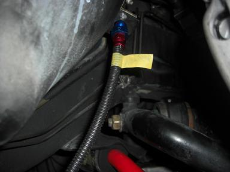 クラッチラインは、ブレーキと同じような構造なので、耐久性とフィーリングの向上を期待して マスターシリンダーとレリーズシリンダーの間のホースはメッシュホースで作ってもらった。 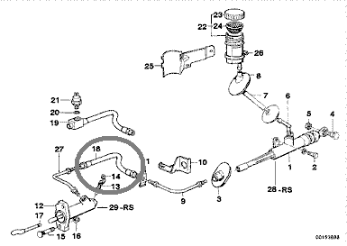 18番の部分のホースです。 |
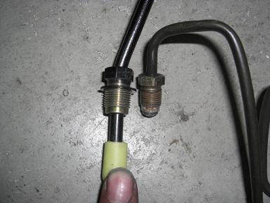 これは、１枚上の画像の27番に当たる部分のパイプライン M5と535ではネジの大きさが違う。。 左：M5のマスター、レリーズ使用だと12mmのライン 右：535i（B10 3.5）のマスター、レリーズ使用だと10mmのライン が必要となる。 こんなところが微妙に違う。。 今回は、535iのクラッチキットを使用したためにマスター、レリーズも535i用に。 |
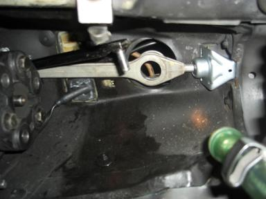 つづいては、シフト類の取り付け。 シフトアーム類は、室内側からの作業はできないので プロペラシャフトを取り付ける前に下側から行う。 |
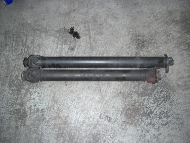 今回の載せ換えで最も悩んだ部分、プロペラシャフト。。 上がMT用 下がAT用 MT用のほうが少し全長が長い。 Ｍゴロー号には、Ｍサイズのデフがついています。 Ｍ５のプロペラシャフトを使うと、デフもＬサイズの物を用意しないといけない、、 E34 540iやE32 750iのＬサイズデフが使えないのか・・・？ なんて考えるも、ファイナルや物理的な問題から使えそうに無い。。 そこで、静岡のDOPさんに相談してみると、 「プロペラシャフトの前側だけ交換すればデフ関係はそのままでＯＫ」と教えていただいた＾＾ プロペラシャフトは、ユニバーサルジョイント部分で19mmのボルトを外すと２分割できる。 |
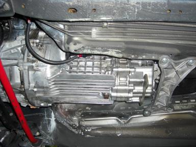 MTが載った写真 ここにたどり着くまでにも乗り越えなければならない大きな問題あった。 DIYでMT換装したSIGさんから「MT用のミッションブラケットが手に入らない」と聞いていたので。。 これをどのようにして手に入れるか。。 が大きな問題だった。 ディーラーに問い合わせてみても、当然「取寄せ不可」の返事が来た。。 そこで救いの手を差し伸べて下さったのがDOPさん！ お世話になりましたm(__)m |
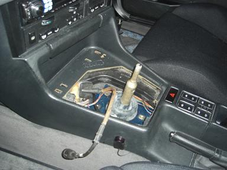 MTオイルを入れ替え、下回りを完成させ室内の作業です。 AT車の場合、シフトポジションがP(パーキング)かN(ニュートラル)でしかセルモーターが回らない。 MTに載せ換えた場合、その辺りの配線処理をしなければセルが回らずエンジンがかからない。 ここまでくれば、もうほとんど完成の状態。 |
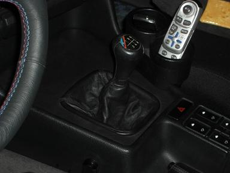 シフトパネルやシフトの部を取り付けて完成。 6速のノブしかなかった為に６速用が付いているが実際は５速（笑 午前10時から作業を始め、翌日午前４時まで18時間の突貫作業で載せ換えが完了した！ 完成が近づくにつれ、疲れよりも動くのか？と不安ばかりが大きくなっていた。 完成し、試運転へ・・・ １速→２速→３速→４速→５速と順調にシフトアップ ４速→３速へのシフトダウン時にとギアが鳴くもののそれ以外は順調＾＾ 走れない状態は避けることができた＾＾/ 試走が終わると急に疲れが。。。 |
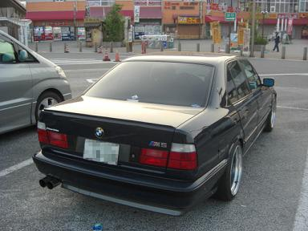 しかし・・・この日は、GW真っ最中の５月４日。。 渋滞を避けるべく、そのまま帰ることにした。 途中、オイル漏れなど確認するために所々で休憩。。 少し眠かったので名阪国道 針テラスで仮眠することに。 |
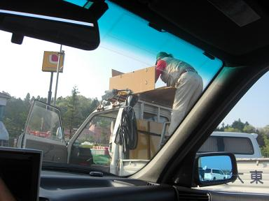 トントン、ガンガン、バコン！と騒がしいなぁ。。。と外を見ると。。 おっさんが軽トラの屋根に乗って何か組み立てていた なにも寝てる隣に来て作業しなくても (--; |
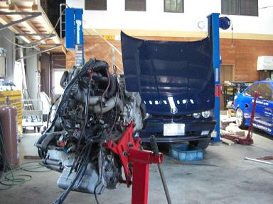 乗ってみた感想は、ATの頃からは想像できないほどパワフルになった。 MTになると、今まで何気なく操作していたウインカー、ワイパー、ライトなどのスイッチ類が、 操作しやすい位置にあることに気づいた。 そして何よりも運転していて楽しい！ 今回の載せ換えにあたり、 部品の提供や、アドバイスしていただいた DOPさんはじめ、boven7さん、SIGさん、E34＠kansaiの方々に大変お世話になりました＾＾/ 一人では、絶対に完成までたどり着くことは出来なかった。 ありがとうございましたm(__)m |